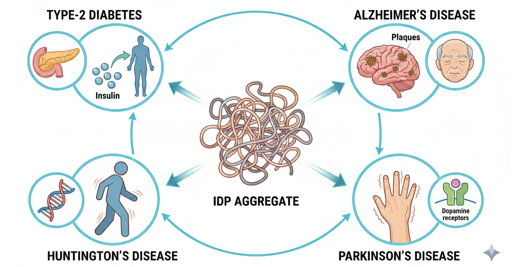

The Complexity of IDPs
Intrinsically Disordered Proteins
In molecular biology, intrinsically disordered proteins (IDPs) occupy a beautiful exception. Rather than settling into a singular rigid architecture, they continuously evolve as a dynamic ensemble. This fluidity permits immense functional versatility, allowing simultaneous roles in signaling and phase separation. However, this same adaptability presents a thermodynamic vulnerability. Minor structural perturbations can catalyze pathological amyloid assemblies — driving a complex transition from elegant disorder to highly rigid pathological states.


A Physicist’s Perspective
IDPs gracefully demand a reframing of how we model biology. They navigate intricate free energy landscapes filled with vast shallow basins. Predicting their behavior asks for a precise union of thermodynamics and kinetics—applying entropy, conformational diffusion, and energy barriers as analytical instruments. The profound question becomes mathematically predicting how sequences dictate macroscopic stability and aggregation geometry within these statistical boundaries.